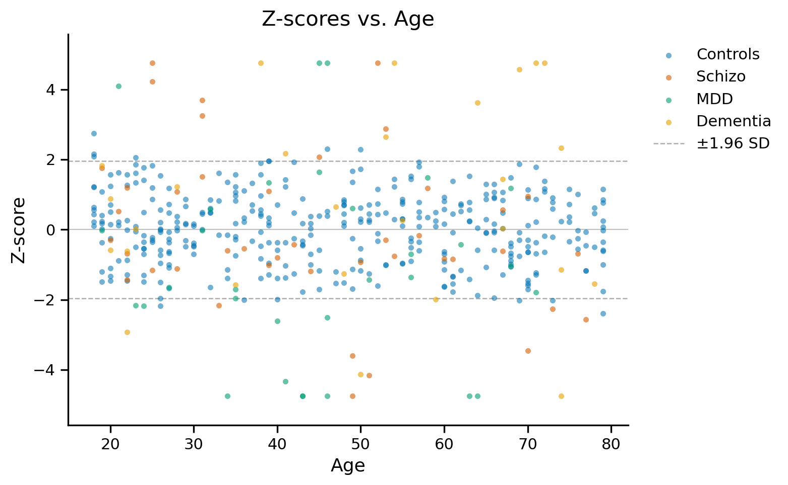
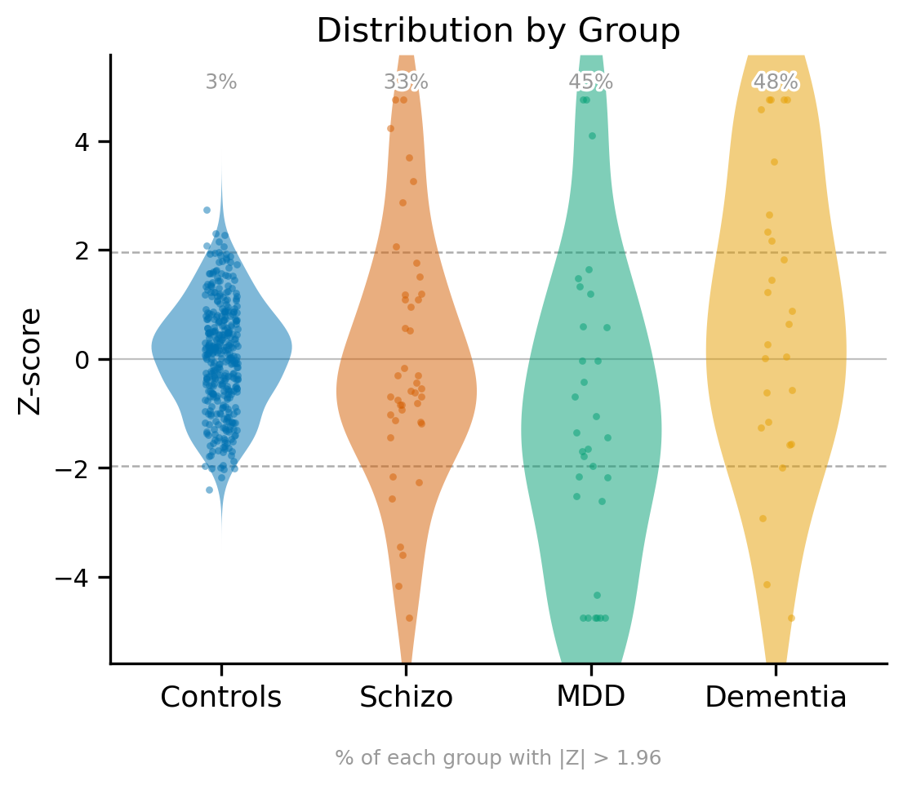

Z-Score Plotting#
gamlss_main.Gamlss.
plot_z_scores#
plot_z_scores(test_data, train_data, affected=None, func_name=None,
x_var='age', x_var_name='Age', figsize=None,
save_image=None, file_name=None, dpi=300,
font_size=[15, 13, 13, 11], title=None,
use_transfer=False, gam_refit_path=None,
plot_scatter=True, show_calibration_band=False,
panels='both',
point_color=None, save_pdf=False, ax=None,
params_to_adjust=None, adjustment_covariates=None)
Plots z-scores with reference lines at ±1.96 and 0. Points beyond ±1.96 are considered statistical outliers. By default, produces two independent figures: z-scores against x_var, and each group’s z-score distribution with the percentage exceeding ±1.96 annotated per group – each sized normally for its own content, shown one after another. See panels to show only one. Affected status is color-coded consistently across both. Supports site transfer adjustments for accurate z-score calculation on new sites.
Parameters:
test_data : pandas.DataFrame
DataFrame containing the test data
train_data : pandas.DataFrame
DataFrame containing the training data
affected : numpy.ndarray, optional
Array indicating affected status for color coding
'None', NaN and the healthy labels ('healthy', 'healthy control(s)', 'control(s)', any case) are drawn as Controls; every other label is drawn as its own group. Labels that mention ‘healthy’ or ‘control’ but are not on this list (e.g. 'healthy subject', 'unhealthy') raise an error asking you to rename them.
func_name : str, optional
Not needed; leave it out (the model’s own family is always used). Still accepted so that older code keeps working (a different family raises an error); passing it shows a FutureWarning and it will be removed in the next version
x_var : str, default=’age’
Column name for x-axis variable
x_var_name : str, default=’Age’
Display label for x-axis
figsize : tuple, optional
Figure size (width, height). If None (default), sized automatically based on panels and, for the distribution panel, how many groups are present.
save_image : str, optional
Folder path to save the image
file_name : str, optional
File name for saved image
dpi : int, default=300
DPI for saved image
font_size : list, default=[15, 13, 13, 11]
Font sizes for [title, x-axis, y-axis, legend]
title : str, optional
Custom plot title. Applies to the vs.-x_var panel, or to the distribution panel if panels='distribution'.
use_transfer : bool, default=False
If True, use site transfer adjustments for z-score calculation. Essential for accurate z-scores on sites not in training data.
gam_refit_path : str, optional
Path to saved adjustment model (.rds file). Required if use_transfer=True.
Obtained from multisite_transfer() results as results[site]['gam_refit_model_path'].
plot_scatter : bool, default=True
If False, hides the individual z-score points in the vs.-x_var panel. Doesn’t affect the distribution panel, which always shows individual points.
show_calibration_band : bool, default=False
If True, overlays a smoothed mean ± SD trend across x_var on the vs.-x_var panel.
Silently skipped if x_var isn’t numeric or there isn’t enough data to bin meaningfully.
panels : {‘both’, ‘scatter’, ‘distribution’}, default=’both’
Which panel(s) to draw. 'scatter': only the z-scores vs. x_var panel. 'distribution': only the per-group distribution panel. 'both' (default): both, as two independent figures (unless you pass your own ax=).
point_color : str, optional
Hex color for the scatter points, calibration band, and the reference/Controls group in the distribution panel. Defaults to a colorblind-safe blue (#0072B2).
save_pdf : bool, default=False
If True, additionally saves a vector .pdf copy alongside the primary saved image.
ax : matplotlib.axes.Axes or (Axes, Axes), optional
Existing Axes to draw into, for composing this plot into your own figure/subplot grid. Pass a single Axes when panels is 'scatter' or 'distribution'; pass a 2-tuple/list of two Axes (scatter_ax, distribution_ax) when panels='both', e.g. fig, axes = plt.subplots(2, 1); model.plot_z_scores(..., ax=axes).
If provided, draws into it instead of creating its own figure(s), and skips plt.show()/saving. If None (default), panels='both' creates two independent figures (not one combined subplot grid) – each keeps its own normal size exactly as it would alone, shown one after another.
params_to_adjust : list of str, optional
Parameters the transfer adjusted (site_transfer’s params_to_adjust). Only used if use_transfer=True.
If None (default), read from the saved adjustment model itself; if given, it must match what the transfer adjusted (an error is raised otherwise).
adjustment_covariates : list of str, optional
Covariate columns the transfer was fitted with (site_transfer’s adjustment_covariates). Only used if use_transfer=True.
Required when the adjustment model has covariate terms; leaving it out then raises an error (default is None).
Returns:
(fig, ax) : varies – see below
panels='scatter' or 'distribution': a single (Figure, Axes) pair, as before. panels='both' with ax=None: ((scatter_fig, distribution_fig), (scatter_ax, distribution_ax)) – two independent figures. panels='both' with your own ax=: (fig, (scatter_ax, distribution_ax)), since both Axes already share the one figure you built. When use_transfer=True, adds “(Transfer Adjusted)” to the vs.-x_var panel’s title.
Examples:
from rpy2.robjects.packages import importr
import rpy2.robjects as robjects
stats = importr('stats')
gamlss_model.plot_z_scores(test_data1, df_train, affected=test_data1['affected'],
font_size=[15, 13, 13, 11], title="Z-scores vs. Age");


# AIC and BIC can be calculated directly from the fitted R model as follows
bic = stats.BIC(robjects.r[model_name])[0]
aic = stats.AIC(robjects.r[model_name])[0]
print(f"AIC: {aic}, BIC: {bic}")
AIC: 3065.4773340280535, BIC: 3119.5758178920805